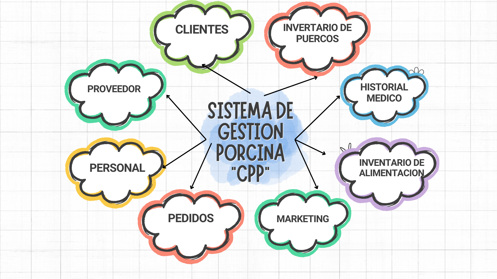

Centro de Producción Porcina (CPP)
Un sitio web para el control y manejo de una granja, y poder realizar el registro de los datos de la granja, utilizando las TIC's
Problematica del Proyecto
Actualmente el seguimiento y registro de las actividades de los cerdos (entrada, salida, alimentación, etc.) se realiza manualmente en un cuaderno, la falta de un sistema de automatización centralizado
impide que los propietarios accedan a la información de forma rápida y segura, haciendo que a veces los cerdos reciben una cantidad incorrecta de alimento, lo que puede afectar su desarrollo y productividad.
Objetivos de Proyecto
Diseñar y realizar una base de datos que almacene información relevante sobre la bitácora porcina, desarrollar una aplicación funcional que permita el ingreso,
almacenamiento y visualización de estos datos, establecer una red local segura para facilitar el acceso al sistema, asegurar la conectividad entre la base de datos
y la aplicación para mantener la coherencia e integridad de la información, y realizar pruebas exhaustivas para validar la funcionalidad, rendimiento y usabilidad del sistema.
Subsistemas del Proyecto
Se opto por separar los subsistemas conforme a las necesidades del cliente, para asi tener un mayor control al momento de hacer el ingreso
de los datos de cada subsistema.
